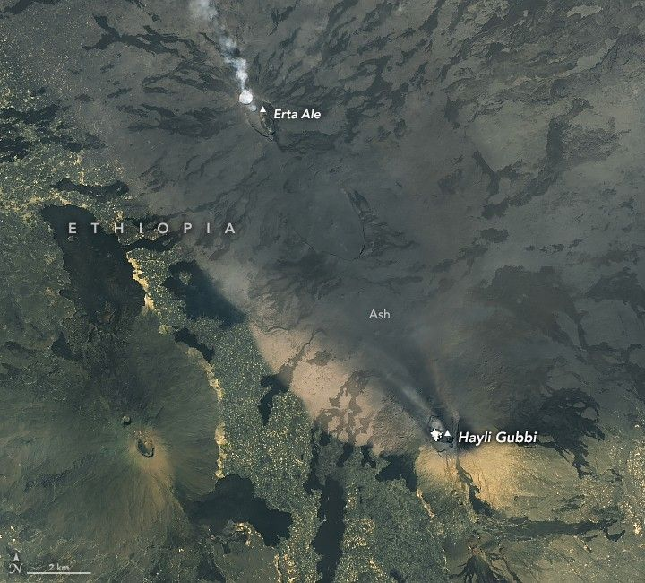

Hayli Gubbi’s Explosive First Impression
On November 23, 2025, the Hayli Gubbi volcano in northern Ethiopia erupted dramatically. The shield volcano in the Danakil (Afar) Depression began spewing ash and volcanic gases around 11:30 a.m. local time (8:30 UTC), marking its first documented explosive eruption. The plume reached the upper troposphere, drifted northeast, and eventually crossed northern India and China, disrupting flights.
The MODIS (Moderate Resolution Imaging Spectroradiometer) on NASA’s Aqua satellite captured the eruption about 4 hours after it was first detected. Satellite data indicate the plume reached 15 kilometers (9 miles) above sea level and contained roughly 0.2 teragrams (220,000 tons) of sulfur dioxide. A light-colored cloud, likely pyroclastic material, is also visible spreading north near the ground. For comparison, the same sensor acquired an image on November 15, before the eruption.
In this remote region of East Africa, tectonic plates are moving apart, allowing magma to rise and feed several active volcanoes. Due to Hayli Gubbi’s isolation, geologists are uncertain when it last erupted, though evidence suggests it was within the past 8,000 years, possibly within a few centuries.
Hayli Gubbi lies about 12 kilometers (7 miles) south-southeast of Ethiopia’s most active volcano, Erta Ale, where a lava lake has persisted for decades. Following Erta Ale’s eruption in July 2025, scientists monitored magma movement using interferometric synthetic aperture radar (InSAR) and other techniques. They found magma propagated south from Erta Ale, beneath Hayli Gubbi, likely triggering the low-level activity observed at Hayli Gubbi from late July onward, including sulfur dioxide emissions, summit clouds, and ground displacement of several centimeters, according to the Centre for Observation and Modelling of Earthquakes, Volcanoes and Tectonics (COMET).
The eruption was brief, subsiding by November 25, but caused visible changes to the land surface. Ash covered large areas, affecting nearby villages in Ethiopia’s Afar region. Residents reported respiratory issues, and grass and water for livestock were contaminated.
The summit also changed in appearance. A detailed view from the OLI-2 (Operational Land Imager-2) on Landsat 9 on November 24, 2025 shows Hayli Gubbi and neighboring Erta Ale. The eruption enlarged Hayli Gubbi's existing crater, partially filled with a low-lying cloud, and created two new craters to the southeast. Ash deposits cover older lava flows on the volcano’s slopes.